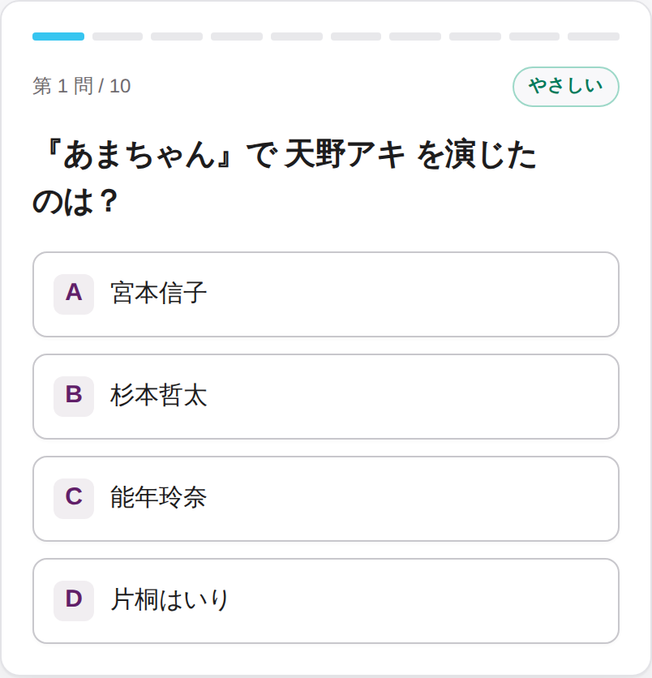
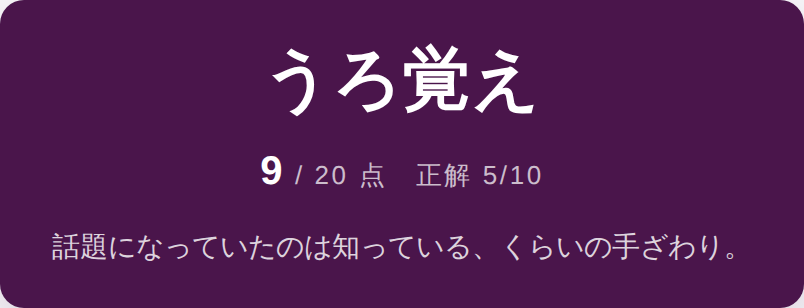

ドラマ検定
題名を入れるだけ。10問であなたの「好き」の深さが測られて、最後に称号がつきます。 当時いちばん語っていたのは、たぶんあなたです。
無料・登録不要・スマホだけで遊べます

実際の出題画面です
この17作品は、問題を先に用意してあります
心当たり、ありませんか。
主題歌はいまでも歌えるのに、主人公のフルネームが出てこない。
最終回、泣いたのは覚えている。何が起きたかは、なんとなく。
友達と思い出話をしたら、記憶が食い違って気まずくなった。
アプリを入れる必要も、アカウントを作る必要もありません。
好きなドラマの題名をひとつ。候補から選ぶだけでも始まります。
4択です。やさしい・ふつう・難しいが混ざり、難しい問題ほど配点が重くなります。
点数だけでなく、どの層が弱かったかも出ます。悔しかったら、もう一度。
得点率で6段階。最高位の「制作陣」は全問正解だけです。

称号のほかに、どの層が弱かったかも出ます
17作品は問題を作り置きしてあります。載っていない作品も、その場で作ります。
1作品あたり20問を先に用意してあります。表には載っていない「物語の中で何が起きたか」を問う問題です。
題名を入れれば、日本語版 Wikipedia の記事からその場で10問つくります。マイナーな作品でも、記事さえあれば挑戦できます。
4択クイズの質は、正解ではなく「間違いの選択肢」で決まります。
ダミーの選択肢は同じ作品の別の人物や別の回から取ります。どれも実在するので、うろ覚えでは引っかかります。
明らかに場違いな選択肢を混ぜません。作品を知らない人が消去法だけで正解できる問題は、4択の顔をした1択です。
答えが問題文に漏れていないか、正解だけ不自然に長くないか。検査に落ちた問題は出さずに捨てています。